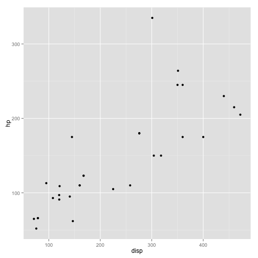
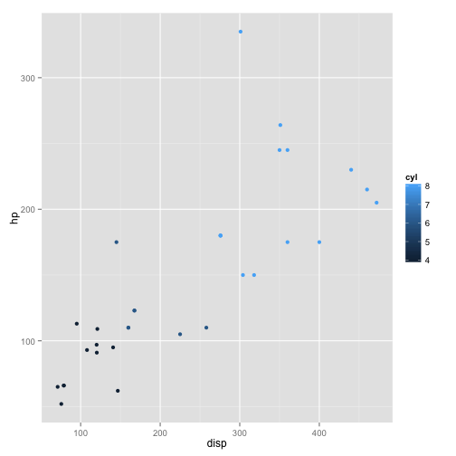
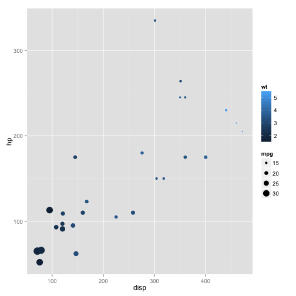
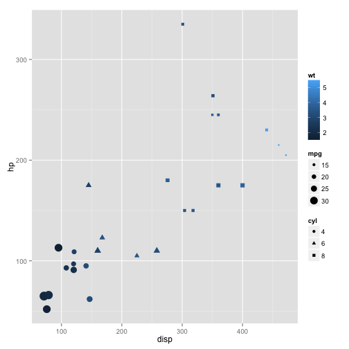

author: Sean Davis title: Introduction to the Grammar of Graphics, ggplot2 output: BiocStyle::html_document:
toc: true
The CRANpkg('ggplot2') package is a relatively novel approach to generating highly informative publication-quality graphics. The "gg" stands for "Grammar of Graphics". In short, instead of thinking about a single function that produces a plot, CRANpkg('ggplot2') uses a "grammar" approach, akin to building more and more complex sentences to layer on more information or nuance.
The CRANpkg('ggplot2') package assumes that data are in the form of a data.frame. In some cases, the data will need to be manipulated into a form that matches assumptions that CRANpkg('ggplot2') uses. In particular, if one has a matrix of numbers associated with different subjects (samples, people, etc.), the data will usually need to be transformed into a "long" data frame.
To use the CRANpkg('ggplot2') package, it must be installed and loaded. Assuming that installation has been done already, we can load the package directly:
library(ggplot2)
We are going to use the mtcars dataset, included with R, to experiment with CRANpkg('ggplot2').
data(mtcars)
mtcars dataset using View, summary, dim, class, etc.We can also take a quick look at the relationships between the variables using the pairs plotting function.
pairs(mtcars)
That is a useful view of the data. We want to use CRANpkg('ggplot2') to make an informative plot, so let's approach this in a piecewise fashion. We first need to decide what type of plot to produce and what our basic variables will be. In this case, we have a number of choices.
ggplot(mtcars,aes(x=disp,y=hp))
First, a little explanation is necessary. The ggplot function takes as its first argument a data.frame. The second argument is the "aesthetic", aes. The x and y take column names from the mtcars data.frame and will form the basis of our scatter plot.
But why did we get that "Error: No layers in plot"? Remember that ggplot2 is a "grammar of graphics". We supplied a subject, but no verb (called a layer by ggplot2). So, to generate a plot, we need to supply a verb. There are many possibilities. Each "verb" or layer typically starts with "geom" and then a descriptor. An example is necessary.
ggplot(mtcars,aes(x=disp,y=hp)) + geom_point()

We finally produced a plot. The power of ggplot2, though, is the ability to make very rich plots by adding "grammar" to the "plot sentence". We have a number of other variables in our mtcars data.frame. How can we add another value to a two-dimensional plot?
ggplot(mtcars,aes(x=disp,y=hp,color=cyl)) + geom_point()

The color of the points is a based on the numeric variable wt, the weight of the car. Can we do more? We can change the size of the points, also.
ggplot(mtcars,aes(x=disp,y=hp,color=wt,size=mpg)) + geom_point()

So, on our 2D plot, we are now plotting four variables. Can we do more? We can manipulate the shape of the points in addition to the color and the size.
ggplot(mtcars,aes(x=disp,y=hp)) + geom_point(aes(size=mpg,color=wt,shape=cyl))
Why did we get that error? Ggplot2 is trying to be helpful by telling us that a "continuous varialbe cannot be mapped to 'shape'". Well, in our mtcars data.frame, we can look at cyl in detail.
class(mtcars$cyl)
## [1] "numeric"
summary(mtcars$cyl)
## Min. 1st Qu. Median Mean 3rd Qu. Max.
## 4.000 4.000 6.000 6.188 8.000 8.000
table(mtcars$cyl)
##
## 4 6 8
## 11 7 14
The cyl variable is "kinda" continuous in that it is numeric, but it could also be thought of as a "category" of engines. R has a specific data type for "category" data, called a factor. We can easily convert the cyl column to a factor like so:
mtcars$cyl = as.factor(mtcars$cyl)
Now, we can go ahead with our previous approach to make a 2-dimensional plot that displays the relationships between five variables.
ggplot(mtcars,aes(x=disp,y=hp)) + geom_point(aes(size=mpg,color=wt,shape=cyl))

I leave this section open-ended for you to explore further options with the ggplot2 package. The data represent the on-time data for all flights that departed New York City in 2013.
library(nycflights13)
head(flights)
## year month day dep_time dep_delay arr_time arr_delay carrier tailnum
## 1 2013 1 1 517 2 830 11 UA N14228
## 2 2013 1 1 533 4 850 20 UA N24211
## 3 2013 1 1 542 2 923 33 AA N619AA
## 4 2013 1 1 544 -1 1004 -18 B6 N804JB
## 5 2013 1 1 554 -6 812 -25 DL N668DN
## 6 2013 1 1 554 -4 740 12 UA N39463
## flight origin dest air_time distance hour minute
## 1 1545 EWR IAH 227 1400 5 17
## 2 1714 LGA IAH 227 1416 5 33
## 3 1141 JFK MIA 160 1089 5 42
## 4 725 JFK BQN 183 1576 5 44
## 5 461 LGA ATL 116 762 5 54
## 6 1696 EWR ORD 150 719 5 54
Feel free to explore. Consider using other "geoms" during your exploration.
sessionInfo()
## R version 3.2.1 (2015-06-18)
## Platform: x86_64-apple-darwin13.4.0 (64-bit)
## Running under: OS X 10.10 (Yosemite)
##
## locale:
## [1] en_US.UTF-8/en_US.UTF-8/en_US.UTF-8/C/en_US.UTF-8/en_US.UTF-8
##
## attached base packages:
## [1] stats graphics grDevices utils datasets methods base
##
## other attached packages:
## [1] nycflights13_0.1 ggplot2_1.0.1 BiocStyle_1.5.3 knitr_1.8
## [5] Rgitbook_0.9
##
## loaded via a namespace (and not attached):
## [1] Rcpp_0.11.6 knitcitations_1.0.6 MASS_7.3-40
## [4] munsell_0.4.2 colorspace_1.2-4 bibtex_0.4.0
## [7] stringr_0.6.2 httr_0.6.1 plyr_1.8.1
## [10] tools_3.2.1 grid_3.2.1 gtable_0.1.2
## [13] digest_0.6.8 RJSONIO_1.3-0 RefManageR_0.8.63
## [16] reshape2_1.4 formatR_1.0 codetools_0.2-11
## [19] RCurl_1.95-4.3 memoise_0.2.1 evaluate_0.5.5
## [22] labeling_0.3 scales_0.2.4 XML_3.98-1.1
## [25] lubridate_1.3.3 proto_0.3-10